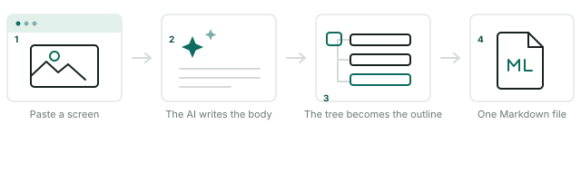

What it does
Callout9 writes software user manuals out of screen captures. Paste a screen and it becomes a node; the AI reads that screen and writes the body; the tree you arrange becomes the document's heading structure; and the whole thing leaves as a single .md file with the pictures embedded in it.

Write “① the search box, ② the date filter”, press ✦ on the text node, and the AI returns the same screenshot with those numbers marked in red. It lands as an image node right where it belongs.
Nesting is not decoration: a top-level node exports as H1, its child as H2, and headings already inside a body are pushed down to match. Drag a node and the document reorganises with it.
The default instruction tells the model to use only elements it can actually see, to number procedures, and to describe input fields as a table — and never to invent a feature. You can rewrite that instruction.
Claude built in with no key, or your own key on Anthropic, OpenAI or Gemini — or any OpenAI-compatible endpoint, which is how you point it at an in-house or local server.
Crop, resize, rotate, select and move a region, pencil, eraser, flood fill, colour picker, shapes and text, on the 20 familiar swatches. Right-drag swaps the two colours. 30 steps of undo.
Headings, bold, lists, quotes, inline code and colour — edited as formatted text, saved as clean Markdown. Split a node at the cursor, or merge it back into the one above.
Point it at a Markdown or AsciiDoc file and it comes apart into the tree: H1–H3 become nodes, and every picture in the body becomes an image node under its heading.
Build File writes a single .md with every picture embedded — nothing to zip and no folder of assets to lose. Preview renders it for print or PDF.
Every edit is saved as you work and the whole tree comes back when you reopen. The editor ships inside the app, so it loads with no network at all — behind a corporate firewall included.
.md .markdown .mkd .txt .adoc .asciidoc .asc .ad.md with embedded images · Preview prints to paper or PDF